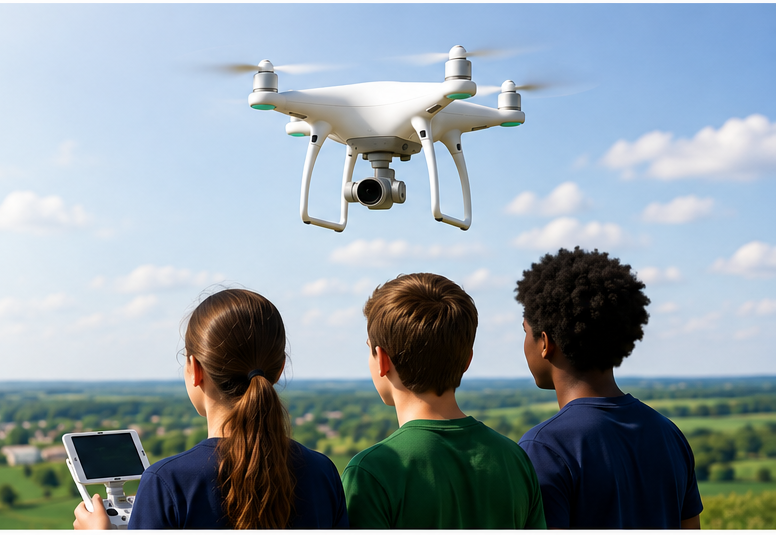

Rural STEM Access
Expanding opportunities for rural and underserved communities to engage with emerging drone technologies.
Educate • Empower • Elevate
DRONEXA America is a research-informed educational initiative being developed to support the safe, inclusive, standards-aligned, and workforce-oriented integration of unmanned aircraft systems (UAS) into K–12 education.

Why DRONEXA America
DRONEXA America translates research on drone technology integration in K–12 STEM education into practical frameworks, educator resources, implementation models, and evidence-building initiatives.
Our Work
DRONEXA America brings instructional design, accessibility, safety, workforce readiness, and implementation evidence into one educational model.
Expanding opportunities for rural and underserved communities to engage with emerging drone technologies.
Developing research-informed guidance, professional learning, and implementation support for educators.
Advancing meaningful participation through Flight Without Limits™ and accessible learning design.
Connecting K–12 learning with technical skills, career awareness, and America’s evolving drone ecosystem.
Promoting responsible UAS learning grounded in safety, regulatory awareness, and ethical technology use.
Signature Inclusive STEM Component
Flight Without Limits™ is an inclusive UAS-STEM framework currently in development as a signature component of DRONEXA America. It is being designed to support meaningful participation of students with mobility impairments and other physical accessibility needs.
View development resources →Research-to-Practice Model
Initial Implementation Environment
The proposed Rural Nebraska pilot is being developed as an initial implementation and evidence-development environment for DRONEXA America. Participation, responsibilities, scheduling, equipment needs, and other implementation details would be developed collaboratively with participating institutions.
Resources in Development
Research-to-practice structure for implementation, evaluation, and future adaptation.
Practical educator guidance for safe and curriculum-aligned drone-integrated STEM learning.
Accessibility-focused framework for meaningful participation in UAS-STEM learning.
Policy, safety, ethics, instruction, access, and workforce-readiness guidance.
Initial regional implementation strategy designed to generate evidence and lessons for refinement.
These materials are in active development and may be revised as research, stakeholder input, and implementation evidence are incorporated.
Collaboration
We welcome conversations with schools, educators, researchers, accessibility professionals, educational agencies, workforce organizations, and industry stakeholders interested in strengthening drone-integrated STEM education.
Start a Conversation